Neste laboratório prático, você aprenderá a utilizar os principais recursos do Amazon S3 voltados à organização, segurança e gerenciamento eficiente de dados. Serão abordadas práticas recomendadas para criação de buckets com configurações seguras, controle de versões de arquivos, automação de regras de ciclo de vida, e geração de URLs pré- assinadas para compartilhamento temporário e seguro de objetos. Além disso, será demonstrada a ativação e configuração do servidor de logs de acesso, utilizando um segundo bucket dedicado ao armazenamento dos registros de operação. Ao final, você estará apto a aplicar esses conhecimentos em ambientes reais, promovendo maior controle, rastreabilidade e otimização no uso do Amazon S3.
Objetivos do Laboratório
Este laboratório mostra-rá como:
- Criar buckets no Amazon S3 com configurações recomendadas de segurança.
- Ativar e utilizar o versionamento para manter múltiplas versões de arquivos.
- Configurar regras de ciclo de vida para transição e expiração de objetos.
- Gerar URLs pré-assinadas para compartilhamento seguro e temporário de arquivos.
- Ativar e consultar logs de acesso utilizando um segundo bucket.
Cenário:
Você é responsável pela gestão de armazenamento na nuvem da sua empresa. Sua missão é garantir que os dados estejam organizados, seguros e com custos otimizados. Para isso, você precisará aplicar práticas recomendadas de versionamento, automação de regras de armazenamento e monitoramento de acessos no Amazon S3.
Pré-requisitos
- Conta ativa na AWS.
- Navegador web atualizado (Chrome, Firefox, Edge, etc.).
- Permissões adequadas no IAM para uso do serviço S3.
- Acesso local para criação e edição de arquivos de teste (como o Lab9.txt).
- Familiaridade básica com o Console de Gerenciamento da AWS.
Passo 1 - Criação do Bucket (Repositório de Arquivos)
Acessar o console do S3:
- Faça login no Console de Gerenciamento da AWS.
- Na barra de pesquisa, digite "S3" e selecione o serviço "S3" nos resultados. 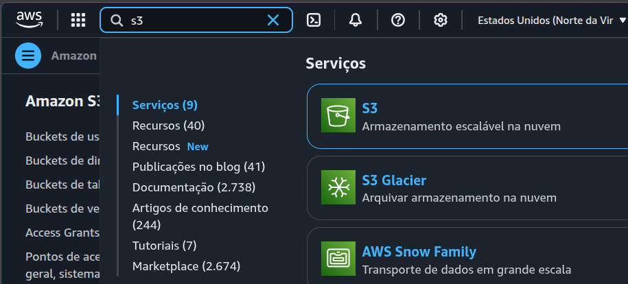
- No canto superior direito do console, verifique se a região "US East (N. Virginia)" (us-east-1) está selecionada. Caso contrário, clique no nome da região atual e escolha "US East (N. Virginia)" na lista. 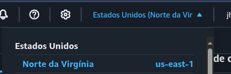
- Na página do S3, clique no botão laranja "Criar bucket". 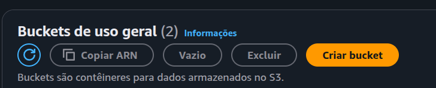
- Insira um nome único globalmente para o seu bucket. Por exemplo:
seu-nome-bucket-lab3(substitua seu-nome por algo único, como seu nome ou iniciais). Anote esse nome, você precisará dele mais tarde. - Região da AWS: Mantenha "US East (N. Virginia) us-east-1".
- Propriedade do objeto: Mantenha como ACLs desabilitadas (recomendado).
- Bloquear acesso público: Marque a opção "Bloquear todo o acesso público". Isso é uma boa prática de segurança. 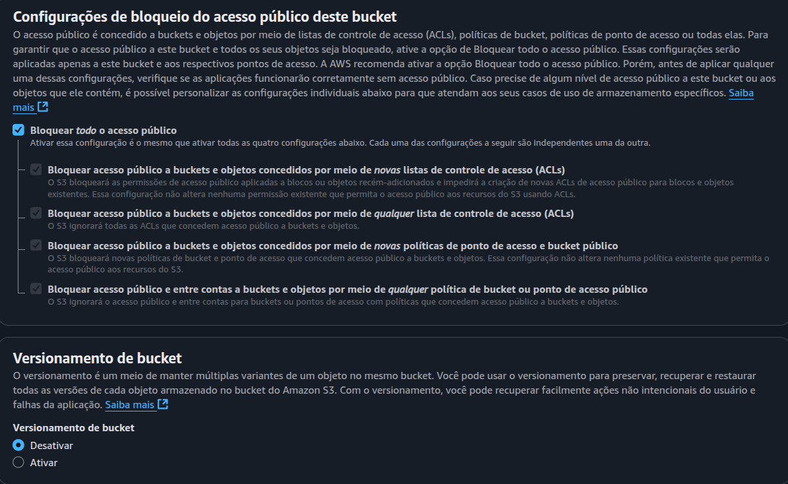
- Versionamento de bucket: Deixe como Desativar. Vamos ativar posteriormente.
- Tags: Não é necessário adicionar tags neste laboratório.
- Criptografia padrão: Criptografia do lado do servidor com chaves gerenciadas do Amazon S3 (SSE-S3) - NÃO ALTERAR. 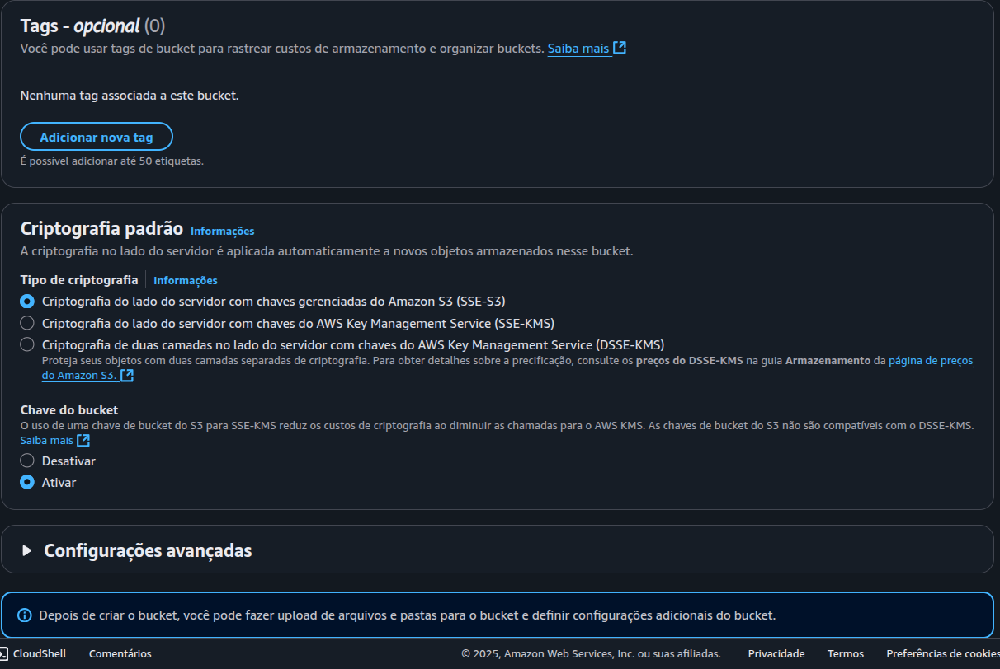
- Chave do bucket: Mantenha o padrão.
- Configurações avançadas - Bloqueio de objeto: Mantenha desativado.
- Revise todas as configurações.
- Clique no botão "Criar bucket" na parte inferior da página.
- Na lista de buckets, encontre e clique no nome do bucket que você acabou de criar. 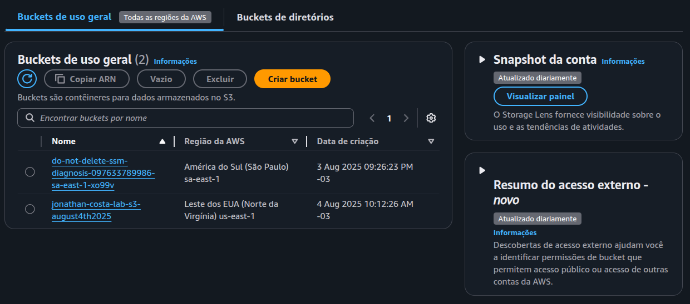
- Local: Vá para a "Área de Trabalho" (Desktop) do seu computador.
- Novo Arquivo: Clique com o botão direito do mouse em uma área vazia, selecione "Novo" e depois "Documento de Texto".
- Nome do Arquivo: Nomeie o arquivo como Lab9.txt.
- Conteúdo: Abra o arquivo Lab9.txt com um editor de texto (como o Bloco de Notas).
- Primeira Versão: Dentro do arquivo, digite a frase: Versão 1.
- Salvar: Salve as alterações no arquivo.
- Iniciar o Upload: Dentro do seu bucket, clique no botão "Carregar".
- Adicionar Arquivos: Arraste e solte o arquivo Lab9.txt da sua Área de Trabalho para a área indicada ou clique em "Adicionar arquivos", navegue até a Área de Trabalho, selecione Lab9.txt e clique em "Abrir".
- Configurações: Mantenha as configurações padrão.
- Confirmar o Upload: Clique no botão "Carregar" na parte inferior da página. 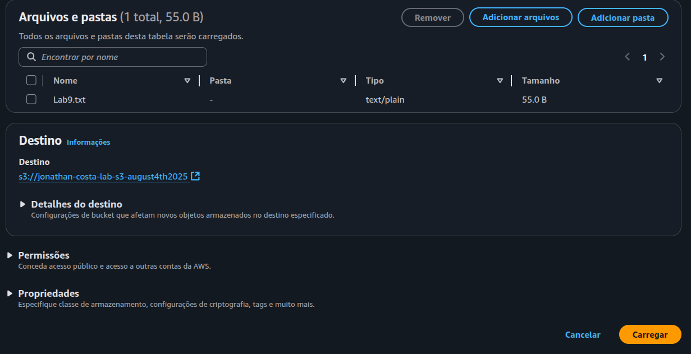
- Após o upload ser concluído, você verá o arquivo Lab9.txt listado no seu bucket.
- Dentro do seu bucket, clique na aba "Propriedades".
- Encontre a seção "Versionamento de bucket" e clique em "Editar". 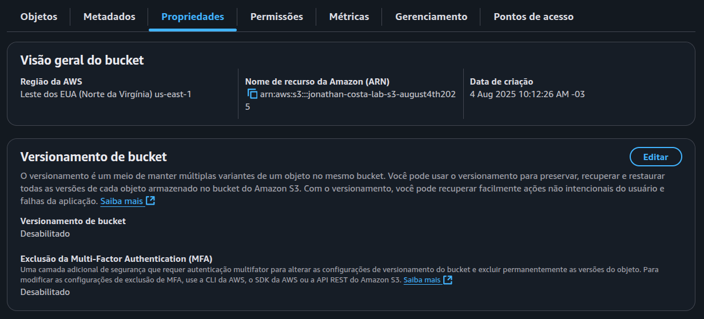
- Selecione "Ativar" e clique em "Salvar alterações". 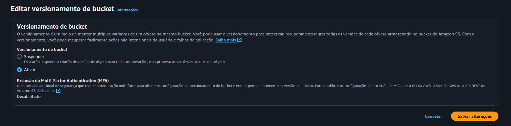
- Editar o Arquivo: Abra o arquivo Lab9.txt na sua Área de Trabalho.
- Segunda Versão: Adicione uma nova linha com o texto: Versão 2.
- Salvar: Salve as alterações.
- Upload: Repita os passos 23 para fazer o upload do arquivo Lab9.txt atualizado para o seu bucket. O S3 agora armazenará ambas as versões.
- Mostrar Versões: Dentro do seu bucket, marque a opção "Mostrar versões".
- Você agora verá as diferentes versões do seu arquivo Lab9.txt. 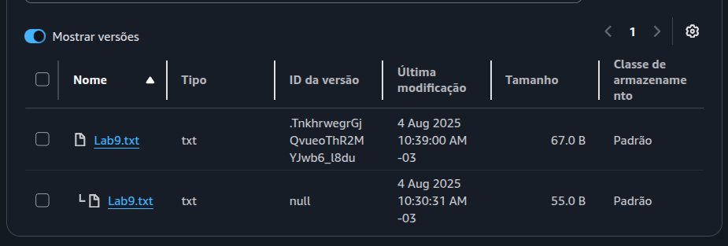
- Detalhes da Versão: Clique na versão mais antiga (aquela que contém apenas "Versão 1"). Você verá opções para abrir ou fazer download dessa versão.
- Restaurar uma Versão Anterior:
- Selecione a versão que deseja restaurar (a versão com "Versão 1").
- Clique no botão "Baixar" para fazer o download dessa versão para o seu computador.
- Você pode agora fazer o upload dessa versão para o bucket, efetivamente restaurando-a como a versão mais recente se desejar. Você irá notar que o arquivo recém carregado terá um novo ID de versão, enquanto as versões anteriores serão mantidas na lista.
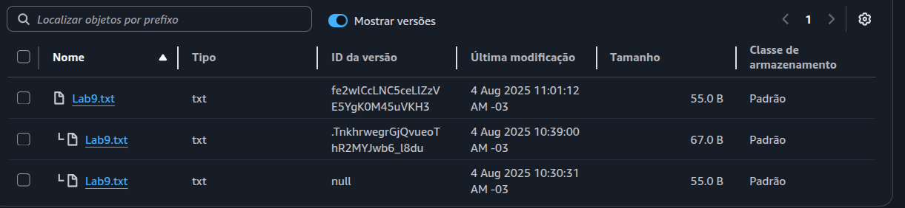
- Dentro do seu bucket, clique na aba "Gerenciamento".
- Em “Regras de ciclo de vida”, clique no botão "Criar regra de ciclo de vida". 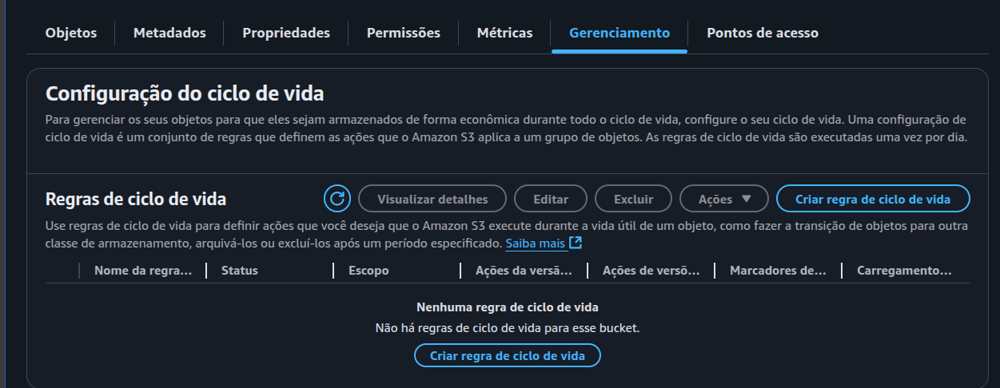
- Nome da regra de ciclo de vida: Dê um nome descritivo, por exemplo:
MoverParaGlacierApos30Dias. - Escolha um escopo para esta regra: Selecione “Aplicar a todos os objetos no bucket”.
- Após isso, selecione a caixa " Reconheço que esta regra se aplicará a todos os objetos no bucket ": 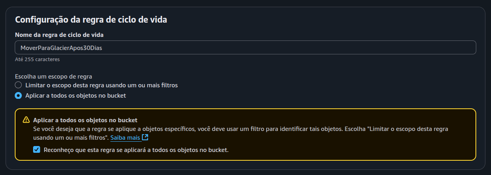
- Na seção “Ações de regras de ciclo de vida: Marque a opção: "
Transição de versões atuais de objetos entre classes de
armazenamento
".
- Marque a opção “Expirar versões atuais de objetos”.
- Após isso, selecione a caixa “ Reconheço que essa regra de ciclo de vida resultará em um custo de transição por solicitação” : 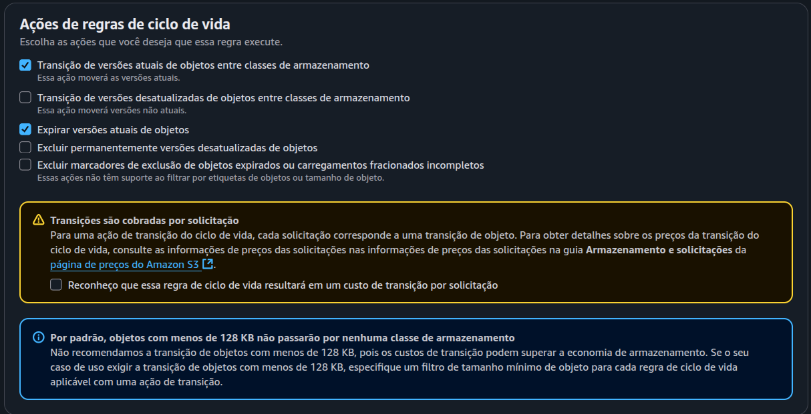
- Na seção “
Transição de versões atuais de objetos entre classes de
armazenamento
”:
- No campo “Escolher transições de classes de armazenamento”, selecione “Glacier Instant Retrieval”.
- No campo “Dias depois da criação do objeto”, digite a 30.
- Na seção “Expirar versões atuais de objetos”?
- Mantenha Dias após a criação do objeto com valor 31 (precisa ser 1 dia a mais dos dias determinados na transição).
- Revisar: Revise as configurações da regra. 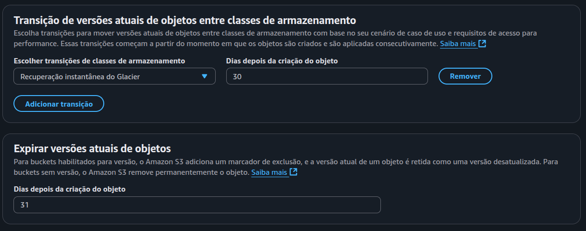
- Clique no botão "Criar regra". 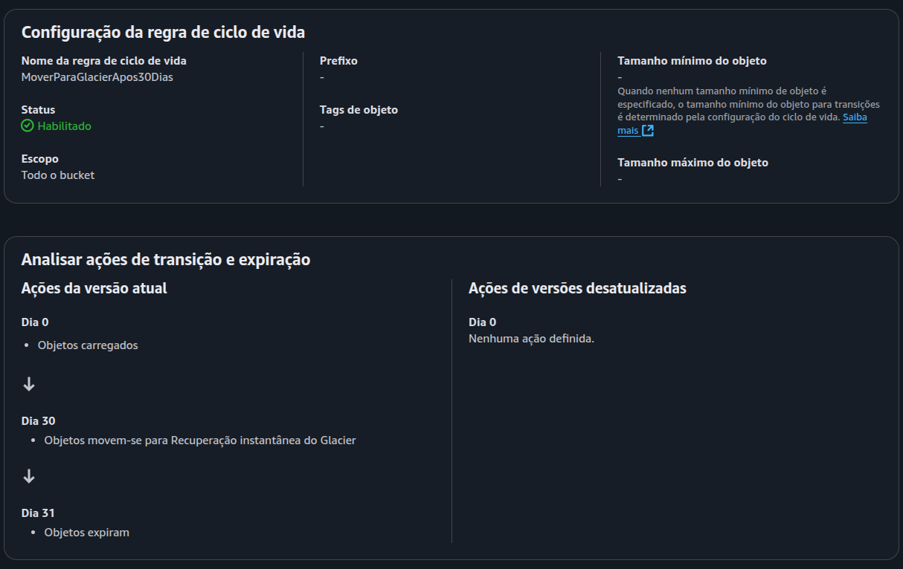
- Volte para a aba "Objetos" do seu bucket.
- Desmarque a opção "Listar versões" para facilitar a visualização.
- Clique no nome do arquivo Lab9.txt (a versão mais recente).
- Clique no botão "Ações".
- Selecione "Compartilhar com um URL pré-assinado".
- Em "Tempo de expiração", você pode definir por quanto tempo o link será válido. Para este exemplo, você pode deixa a caixa de seleção em “Minutos” e definir um período curto, como 1. 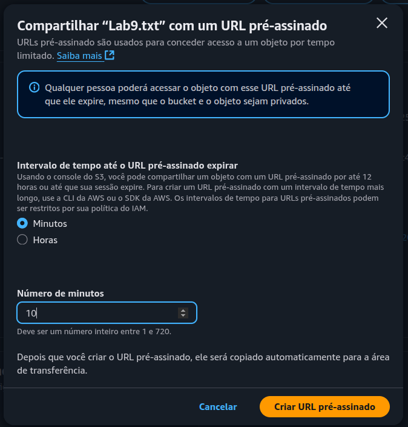
- Clique no botão "Criar URL pré-assinado".
- Copie a URL gerada.
- Abra uma janela anônima/privada no seu navegador (para simular um usuário externo que não está logado na AWS).
- Cole a URL na barra de endereços e pressione Enter. 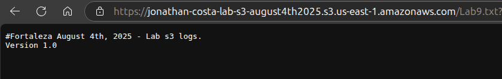
- Você deve conseguir visualizar ou baixar o arquivo Lab9.txt. Após o tempo de expiração definido, a URL não funcionará mais.
- Volte ao console do Amazon S3.
- No canto superior direito do console, verifique se a região "US East (N. Virginia)" (us-east-1) está selecionada. Caso contrário, clique no nome da região atual e escolha "US East (N. Virginia)" na lista.
- Na página do S3, clique no botão laranja "Criar bucket".
- Insira um nome único globalmente para o seu bucket. Por exemplo:
s3-access-logs- seu-nome(substitua seu-nome por algo único, como seu nome ou iniciais). Anote esse nome, você precisará dele mais tarde. - Propriedade do objeto: Mantenha como ACLs desabilitadas (recomendado).
- Bloquear acesso público: Marque a opção "Bloquear todo o acesso público". Isso é uma boa prática de segurança.
- Versionamento de bucket: Deixe como Desativar.
- Tags: Não é necessário adicionar tags neste laboratório.
- Criptografia padrão: Criptografia do lado do servidor com chaves gerenciadas do Amazon S3 (SSE-S3) - NÃO ALTERAR.
- Chave do bucket: Mantenha o padrão.
- Configurações avançadas - Bloqueio de objeto: Mantenha desativado.
- Revise todas as configurações.
- Clique no botão "Criar bucket" na parte inferior da página. 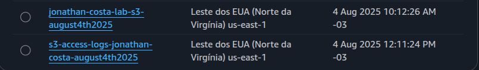
- Acesse o primeiro bucket criado no laboratório.
- Clique na aba "Propriedades".
- Role a página até encontrar a seção "Registro em log de acesso ao servidor". 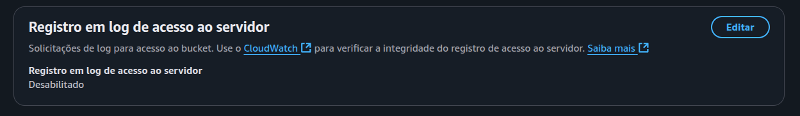
- Clique em "Editar" e marque a opção "Ativar".
- Em “Destino” clique no botão "Procurar no S3" para escolher o bucket de destino dos logs.
- Selecione o seu segundo bucket criado (por exemplo:
s3-access-logs-seu-nome). - Clique em "Escolher destino".
- Revise as configurações e clique em "Salvar alterações". 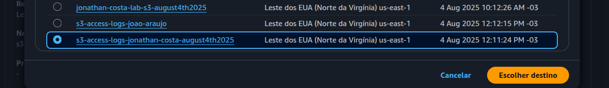
- Acesse novamente o primeiro bucket.
- Clique em "Carregar", depois em "Adicionar arquivos".
- Selecione uma imagem ou qualquer outro arquivo do seu computador.
- Clique em "Carregar" para concluir o upload.
- Após o envio da imagem, aguarde cerca de 1 hora e 30 minutos para que os logs comecem a ser gerados no bucket de logs
(s3-access-logs-seu-nome). - Após aguardar o tempo necessário, volte ao seu bucket “
s3-access-logs-seu- nome”. - Você verá um resultado parecido com a imagem abaixo:
Selecionar a Região AWS us-east-1 (Norte da Virgínia):
Criar o Bucket:
Nome do Bucket:
Importante: Os nomes de bucket devem seguir regras específicas. Use apenas letras minúsculas, números, pontos (.) e hífens (-).
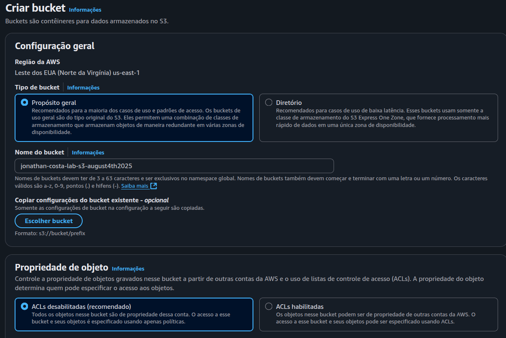Configurações do Bucket:
Criar o Bucket:
Passo 2 - Upload de Arquivos e Versionamento
Acessar o Bucket:
Criação do Arquivo de Teste (Lab3.txt):
Upload do Arquivo para o Bucket S3:
Verificação:
Habilitar o Versionamento:
Upload de uma Nova Versão do Arquivo:
Acessar o Histórico de Versões e Restaurar uma Versão Anterior:
Acesse aba objetos no menu superior:
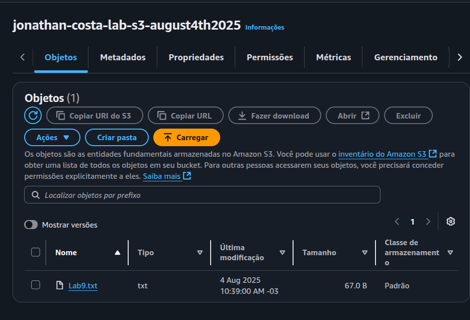Importante: Embora o download permita que você recupere uma versão antiga, ele não a define como a atual diretamente no S3. Você precisaria re-upar a versão baixada, se quiser que ela seja a atual.
Passo 3 - Regra de Ciclo de Vida
Acessar a aba "Gerenciamento":
Criar uma Regra de Ciclo de Vida:
Configurar a Regra:
Criar a Regra:
Essa configuração tem como objetivo otimizar custos e automatizar a gestão do armazenamento no Amazon S3. Ao mover os objetos para a classe Glacier Instant Retrieval após 30 dias, é possível reduzir significativamente os custos de armazenamento de arquivos que não precisam de acesso frequente. Logo em seguida, ao excluir os arquivos no 31o dia, evitamos manter dados desnecessários ocupando espaço e gerando custos contínuos.
Passo 4 - URLs Pré-assinadas
Selecionar um Objeto:
Gerar uma URL Pré-assinada:
Observação: As URLs pré-assinadas são uma ferramenta poderosa e segura para compartilhar objetos do S3 de forma temporária e controlada. Elas são úteis em diversos cenários, desde o compartilhamento simples de arquivos com usuários externos até a integração com aplicações que precisam de acesso temporário a recursos armazenados no S3. Elas eliminam a necessidade de compartilhar credenciais da AWS e ajudam a manter seus buckets privados e seguros.
Configurar a Data de Expiração:
Gerar a URL:
Copiar e Testar a URL:
Passo 5: Criação do Bucket (para Logs de acesso)
Acessar o console do S3:
Selecionar a Região AWS us-east-1 (Norte da Virgínia):
Criar o Bucket para ser usado como servidor de logs:
Nome do Bucket:
Importante: Os nomes de bucket devem seguir regras específicas. Use apenas letras minúsculas, números, pontos (.) e hífens (-).
Configurações do Bucket:
Criar o Bucket:
Passo 6 - Configuração do Bucket para Logs de Acesso (S3- access-logs)
Configuração do Bucket para Logs de Acesso (S3-access-logs)
Ativar o Registro de Acesso ao Servidor
Passo 7 - Gerar Logs com Upload de Arquivo
Se a sua tela estiver semelhante à apresentada, isso indica que você concluiu o laboratório com sucesso.
Para informação: Não é possível configurar ou reduzir o intervalo de entrega desses logs.
- A AWS informa que a entrega dos logs é eventual – geralmente dentro de algumas horas após a atividade registrada.
- Em muitos casos, eles demoram entre 1 a 2 horas, mas isso não é garantido nem personalizável.
- Esse comportamento é padrão do serviço.
- Para mais informações, leia a documentação oficial.
Ao entender o propósito de cada etapa, você estará mais preparado para tomar decisões informadas sobre o gerenciamento de dados no Amazon S3 em cenários do mundo real. Lembre-se de sempre considerar as necessidades específicas de cada empresa ao configurar os serviços da AWS.
Lembre-se de excluir os recursos criados neste laboratório após concluir as tarefas para evitar custos desnecessários.